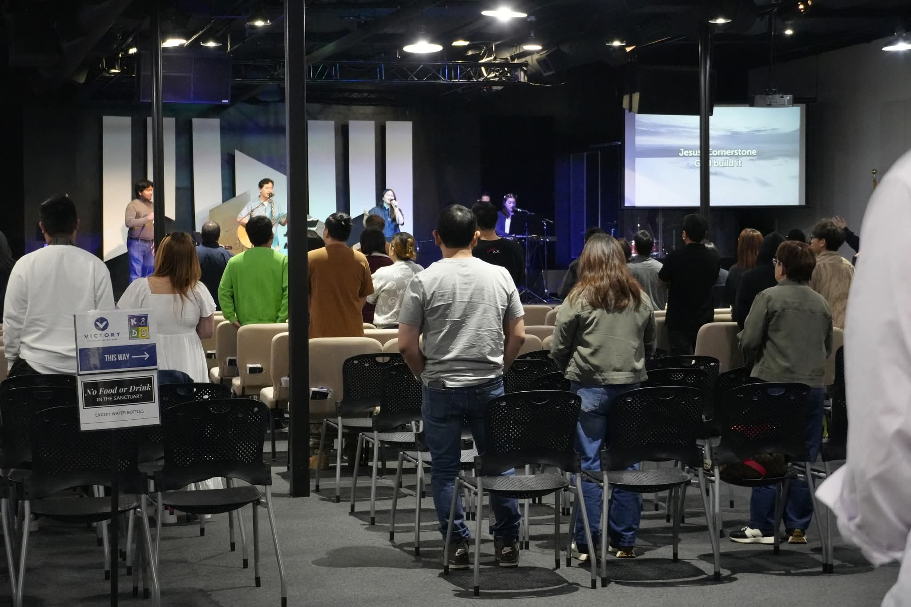
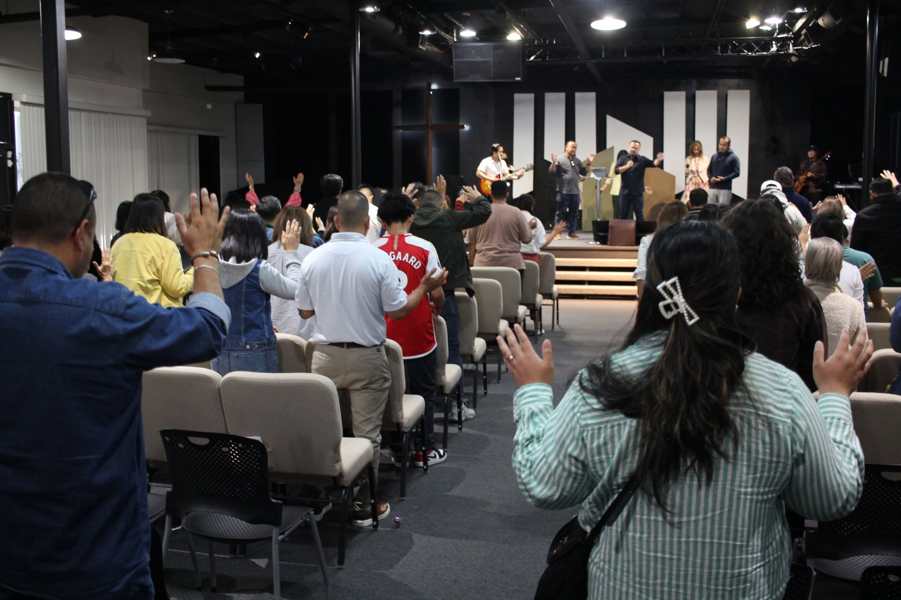
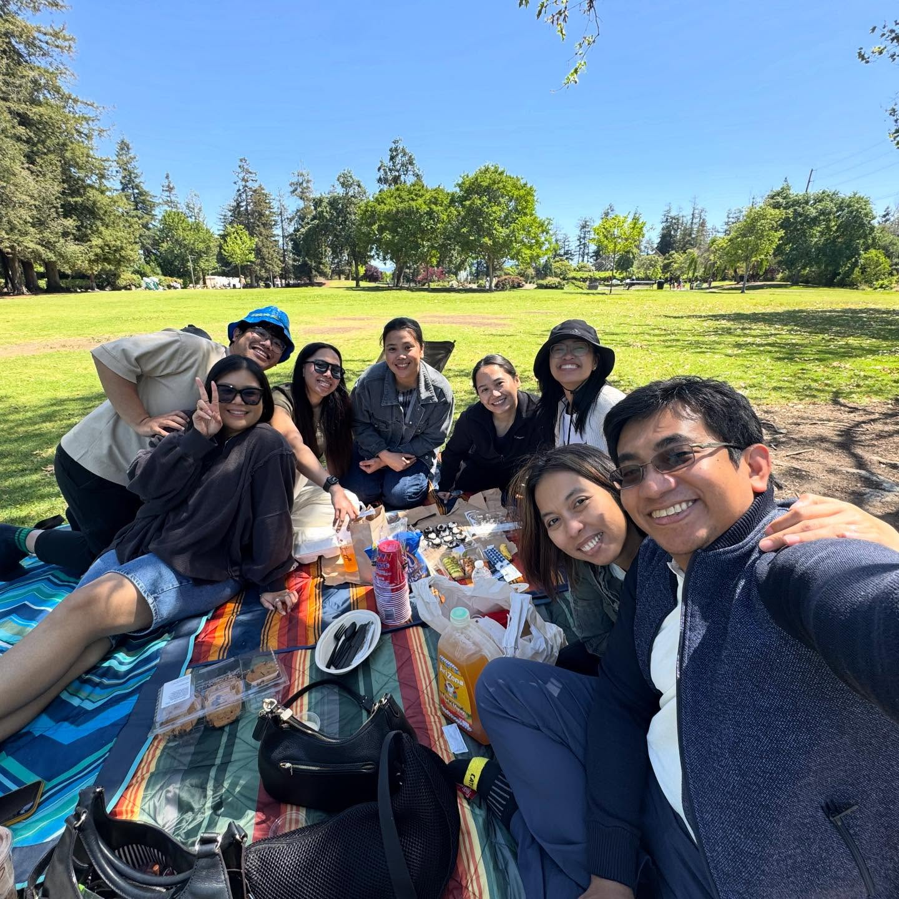
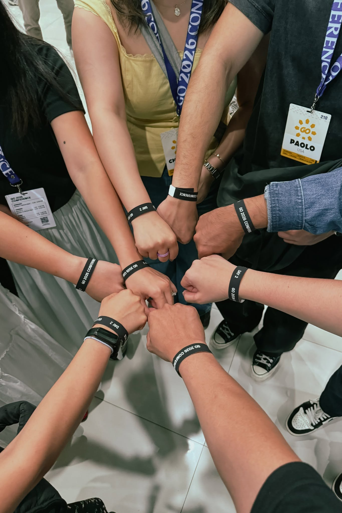

We are a church based in San Jose with different groups all around the Bay Area that exists to honor God and make disciples.
We desire to honor God in every area of life — it is all about Him, not us. We follow Jesus and help others follow Him too, making disciples by engaging our community, establishing biblical foundations, and empowering people to grow in their walk with God.

In addition to adhering to the Apostles' Creed, the Nicene Creed, and the Chalcedonian Creed, we affirm and uphold the following articles of faith without reservation.
We believe in one God, creator and sustainer of all things. He is perfect and unchanging; completely loving, good, and holy; limitless in knowledge, power, and presence. God eternally exists in three persons: Father, Son, and Holy Spirit — one in essence, with each person fulfilling distinct roles.
We believe God has spoken through human authors in the Scriptures, the sixty-six canonical books of the Old and New Testaments. The Bible is the only written, verbally inspired Word of God — self-attesting, unchanging, and without error in all it affirms.
We believe God created all things out of nothing, and all very good, creating humans in His image to know, love, and glorify Him. The first man, Adam, sinned against God, resulting in alienation and death — and all humans have inherited a sinful nature from which they cannot save themselves.
We believe in Jesus Christ, the eternal Son of God, fully God and fully man. He lived a sinless life, gave Himself as a sacrifice for our sins on the cross, died, was buried, rose bodily on the third day, ascended into heaven, and will return to judge the living and the dead.
The gospel is the good news that God became man in Jesus Christ to reconcile lost people to Himself. Salvation is God's gracious act of rescue, by grace, apart from works — everyone who repents and believes in Him receives forgiveness of sins and eternal life.
We believe in God the Holy Spirit, giver and renewer of life. The Spirit convicts concerning sin, regenerates sinners, unites believers to Christ, and empowers Christians for witness and ministry.
We believe in one holy, universal, apostolic Church sent to proclaim the gospel and make disciples of every nation. Water baptism and communion are the two sacraments ordained by Christ as visible signs of His covenant of grace.
Sanctification is the process by which God conforms His people to the image of Christ. Jesus, the King of kings, will return bodily in power and glory to raise the dead, judge the world, and renew creation forever.

Our core values express the good deposit we guard together — the essential values that shape how we build our ministry.
We value obedience. Wholehearted submission to God's will and Word is the starting point of faith and the foundation of all spiritual growth.
We value lost people. We seek to build the church primarily through evangelism, not transfer — through birth, not adoption.
We value spiritual growth. Our primary focus is ministering to people, not conducting meetings or facilitating programs.
We value leadership development, deliberately creating opportunities for young leaders to grow through identification, instruction, and internship.
We value long-term relationships. We embrace community, reject disposable relationships, and choose to walk in love, respect, and unity.

We have multiple Victory Groups that can help you pursue your walk with God alongside people who genuinely care about your growth.
Join a Victory GroupVictory Bay Area is part of Every Nation, a global movement that exists to honor God by establishing Christ-centered, Spirit-empowered, socially responsible churches and campus ministries in every nation.
Every Nation WebsiteThrough your generosity, you are partnering with us in our mission to honor God and make disciples.
"You will be enriched in every way so that you can be generous on every occasion, and through us your generosity will result in thanksgiving to God."